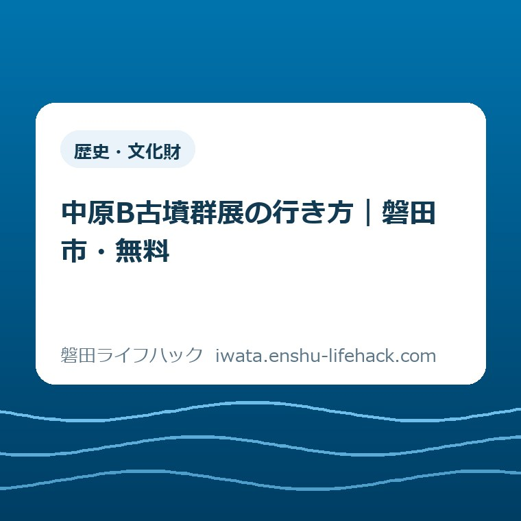

更新：2026.09.16 歴史・文化財
中原B古墳群展の行き方｜磐田市・無料

この記事の要点
Q. 中原B古墳群展は、いつ、どこへ、どう行けばいい？
A. 磐田市埋蔵文化財センターで2026年10月25日まで、8時30分〜17時に見られます。祝日・振替休日は休館、無料・申込不要です。車は図書館東側の10台、バスは磐田駅2番乗り場から二俣山東行き「図書館前」下車徒歩1分です。
結論——先に日付と移動手段だけ決める
中原B古墳群展へ行く前に決めることは、来場日と移動手段の二つです。展示は無料で申込みも要りませんが、祝日・振替休日は休館で、駐車場は10台です。
会場は磐田市埋蔵文化財センターです。住所は〒438-0086 静岡県磐田市見付3678-1。磐田市立中央図書館の近くにあります。
展示時間は午前8時30分から午後5時までです。開催期間は2026年8月1日（土）から10月25日（日）までなので、この記事の公開日である9月9日からも見学できます。
向陽学府の出土品を見たい方にとって、予約枠を取る作業がないのは助かります。ただし、申込不要と「いつ行っても開いている」は同じではありません。
この記事は、磐田市のイベント案内、施設案内、文化財課展示・イベント情報を2026年9月9日に照合して作りました。展示点数、撮影可否、見学の所要時間は、今回確認した市公式3ページに記載がないため、推測で埋めません。

公式情報で確認できる開催条件
磐田市の「向陽学府に古墳があった！中原B古墳群発掘調査成果展」には、会期、時間、会場、対象、料金、申込みの有無が明記されています。
正式な展示名は「向陽学府に古墳があった！中原B古墳群発掘調査成果展」です。検索結果では短い表現も見かけますが、公式ページを探すときはこの名称が確実です。
開催期間は2026年8月1日（土）から10月25日（日）までです。開始日と終了日を含めると、会期は暦の上で86日間あります。
開館時間は午前8時30分から午後5時です。最終入場時刻について、2026年9月9日時点の公式ページには記載がありません。
休館日は国民の祝日と振替休日です。土曜日や日曜日という理由だけで休館とは書かれていませんが、休日の扱いは出発する日のカレンダーで確認します。
対象は「どなたでも」です。年齢、居住地区、学校との関係による参加条件は示されていません。
料金は無料です。磐田市埋蔵文化財センター自体の施設案内にも、入館無料と記されています。
申込みは不要です。電話予約、ウェブ申込み、当日の整理券が必要だという案内も、公式ページにはありません。
展示の開催条件は、2026年7月30日更新の中原B古墳群発掘調査成果展の公式ページで確認できます。予定変更があれば、このページを最後の判断材料にします。
文化財課が展示をまとめたページも、2026年8月31日更新で同じ会期を掲載しています。別の公式ページでも日付が一致していることを確認しました。
磐田市埋蔵文化財センターへの行き方
中原B古墳群展の会場は、静岡県磐田市見付3678-1の磐田市埋蔵文化財センターです。施設名だけでなく住所まで地図アプリへ入れると、同名施設との取り違えを防げます。
車で向かう場合、磐田市の施設案内が示す駐車場は、磐田市立図書館東側の10台分です。展示専用の広い駐車場が別にあるという案内は、今回確認した市公式3ページにはありません。
10台という数字は、家族の外出に置き換えると「着けば必ず停められる」とは言えない規模です。今回確認した市公式3ページには混雑実績がないため、満車になると断言することもできません。
車を選ぶ日は、地図上で会場と図書館東側の位置を一緒に保存します。現地で入口を探しながら道路上に止まる状況は避けます。
駐車場所と当日の切り替え方は、出発前に駐車場・地図・公共交通を確認する手順にも整理しています。運転する人だけに情報を持たせないのがコツです。
公共交通では、JR磐田駅前バスターミナルの2番乗り場から、遠鉄バス「二俣山東行き」に乗ります。「図書館前」で降り、徒歩1分です。
バスの経路は磐田市の施設案内に書かれています。一方、当日の発車時刻までは同ページに載っていないため、出発前に運行事業者の最新時刻表を確認します。
「図書館前」から徒歩1分という案内なら、初めてでも降車後の負担を見積もれます。駅から全区間を歩く所要時間は公式ページにないので、この記事では数字を置きません。
施設の住所、バス、駐車10台は、2026年6月30日更新の施設ガイド 埋蔵文化財センターで確認できます。イベント案内と施設案内の両方を見る理由は、行き方の情報が後者にまとまっているからです。
車かバスかを当日の朝に初めて決めると、同乗者への連絡や時刻確認が増えます。前夜までに第一案と、駐車できなかった場合の第二案を決めておくと動きやすくなります。
臨時駐車場、満車時の誘導先、周辺の提携駐車場については、今回確認した市公式3ページに記載がありません。分からないまま近隣の敷地へ入らず、必要なら文化財課へ確認します。

向陽学府から出土した何が見られるのか
中原B古墳群展では、向陽学府小中一体校の整備に伴う発掘調査で出土した土器や耳環などが展示されます。
発掘調査は、2025年6月から2026年3月まで、向陽中学校の敷地内で行われました。会期だけでなく調査期間も年と月で示されています。
耳環は耳飾りです。公式ページは「土器・耳環など」と紹介していますが、点数、寸法、年代ごとの内訳は掲載していません。
意外なのは、遠い山中の話ではなく、向陽学府小中一体校を整える場所から出た資料を、同じ磐田市内で見られることです。学校づくりと地中の歴史が一本につながります。
身近な場所の古墳と出土品が、何を根拠に文化財として残されるのかを知りたい方は、2026年8月21日に市指定となった兜塚古墳出土資料と直径約84メートルの意味も読めます。
土地を掘る工事と発掘調査の関係を知りたい方は、磐田市の埋蔵文化財届出を地番と地図から確認する記事も読めます。こちらは見学案内ではなく、工事前の手続きに焦点を置いています。
展示を見る前に「学校の整備に伴う調査だった」と知っておくと、出土品を単独の珍品として眺めず、向陽学府の土地の履歴として受け取りやすくなります。
写真撮影ができるかは、公式ページから判断できません。撮りたい場合は、展示室の掲示か受付で確認してからカメラを向けます。
見学の標準所要時間も、今回確認した市公式3ページには記載がありません。「30分あれば足りる」などと予定を固定せず、その後の用事との間に余白を置きます。
展示解説の詳しさ、子ども向けワークシート、職員による案内の有無も未確認です。必要な配慮や説明がある場合は、文化財課へ先に尋ねるのが確実です。
良い点——無料・申込不要で入口が低い
中原B古墳群展の良い点は、無料、申込不要、約3か月の会期、車とバスの案内が公式情報で確認できることです。
入場料がかからないため、「家族全員で入るといくらか」を計算する必要がありません。人数が直前に変わっても、予約の取り直しは不要です。
申込不要なら、子どもの体調や仕事の都合を見て来場日を動かせます。行けなくなったときのキャンセル連絡も要りません。
2026年8月1日から10月25日までの86日間という幅があるため、一日だけの催しより家族の予定へ組み込みやすい構成です。休館日を差し引いて考える点だけは残ります。
駐車台数が10台と数字で公開されているのも良い点です。十分かどうかの評価は別として、車で行く人がリスクを出発前に判断できます。
磐田駅からの乗り場、行き先、降車停留所、徒歩時間まで示されており、車を使わない来場者にも具体的な経路があります。
市の施設で市内の発掘成果を無料公開することは、出土品を専門家だけの情報で終わらせない入口になります。私は、この公開の仕方を率直に評価します。
注文したい点——行き方の情報を一画面へ寄せてほしい
中原B古墳群展で注文したい点は、イベントの開催条件と、駐車・バスの情報が別ページに分かれていることです。
イベントページだけを見ると、無料・申込不要まではすぐ分かります。駐車10台や「図書館前」徒歩1分は、施設案内まで開いて初めて確認できます。
来場者が知りたい順番は、会期、休館日、料金、申込み、住所、駐車、バスです。この七つが一つの表に並べば、出発前の往復が一回減ります。
今回確認した市公式3ページに、展示点数と見学時間の目安がないことも、家族の予定を組む側には迷いになります。正確な点数を出せない場合でも、「小規模なトピック展示」など、市が使える範囲の案内があると判断しやすくなります。
撮影可否も、今回確認した市公式3ページだけでは判断できません。資料ごとに条件が違うなら、「会場表示で確認」と一行あるだけでも、受付での戸惑いを減らせます。
駐車場が10台なら、満車時の公式な切り替え先があるか、ないかも知りたいところです。案内のない場所を、この記事が勝手に代替駐車場として紹介することはしません。
これは担当職員への不満ではなく、情報の並べ方への注文です。良い展示でも、会場へ着く前に迷うと、市民が払う時間は増えます。
文化施設を利用するときの一般的な確認順は、文化施設の開館日・予約・アクセスを先に確認する案内にも載せています。イベントページ側でも同じ順番が見えると使いやすくなります。
大石の視点——無料でも、確認の手間はゼロではない
大石浩之（磐田市／不動産業）は、中原B古墳群展を「無料だから、とりあえず行けばよい」で終わらせず、家族がいつ、どう動くかまで決められる案内として見ます。
私はこう考えます。無料・申込不要でも、休館日と10台の駐車場を見ずに出れば、市民の手間は減りません。
市民は、見学一つのためにも仕事、学校、家族の体調、車を使う人、帰宅時刻をすでに調整しています。その負担を「ちょっと出かけるだけ」と軽く扱わないことが出発点です。
一方で、予約不要という仕組みは、その調整に失敗したときのやり直しを軽くします。行く日を変えても、市へ取消しの連絡をする必要がないからです。
私は、見学時間を30分や1時間と書くか迷いました。しかし、市の三つの案内には所要時間も展示点数もありません。予定を組みやすく見せるために、根拠のない数字を置くべきではないと判断しました。
分からない部分は残ります。だからこそ、分かっている日時、住所、10台、バス停を先に固定し、撮影や展示内容の細部は現地で確認する。この分け方が現実的です。
対案・結論——今日、公式ページを予定表へ保存する
中原B古墳群展へ行くために今日できる一歩は、磐田市の公式イベントページを家族の予定表へ保存し、候補日が祝日・振替休日ではないかを見ることです。
候補日を一つ選んだら、車かバスかを決めます。車なら「図書館東側10台」、バスなら「磐田駅2番乗り場、二俣山東行き、図書館前」を予定表のメモ欄へ入れます。
当日は出発前に、公式イベントページの公開状況をもう一度見ます。2026年10月25日までという会期内でも、施設側の事情で案内が変わる可能性は残るからです。
- 候補日が2026年10月25日以前か確認する
- 祝日・振替休日ではないか確認する
- 車なら図書館東側10台、バスなら図書館前徒歩1分を選ぶ
- 住所「磐田市見付3678-1」を保存する
- 出発前に磐田市公式ページを再確認する
公共施設へ出かける候補を広げたい場合は、磐田市の公共施設を目的別に探す入口も使えます。ただし、新しい予定を詰め込み過ぎる必要はありません。
見付で文化財をもう一つ見るなら、旧見付学校の駐車場10台と見学順の記事があります。両施設を同じ日に回る場合も、それぞれの開館日を別々に確認します。
親と学校時代を振り返る外出なら、竜洋支所内の歴史文書館で9月30日まで開催される小学校展も候補です。土日祝は休館のため、平日に動ける日を選んで確認します。
中原B古墳群展については、無料・申込不要という入口の軽さを生かしつつ、駐車10台と休館日だけは先に見る。これが私の結論です。
家族で共有する当日のメモ
中原B古墳群展の当日メモには、会場名、住所、開館時間、交通手段、公式ページの五項目があれば、同行者も次の動きを判断できます。
運転する人には「中央図書館の近く」だけでなく、「埋蔵文化財センター」「見付3678-1」「図書館東側10台」まで送ります。
バスを使う人には、磐田駅の2番乗り場、二俣山東行き、図書館前下車、徒歩1分を一続きで共有します。帰りの時刻は当日の時刻表で確認します。
撮影したい家族がいるなら、撮影可否は未確認と先に伝えます。現地の表示に従う前提なら、期待違いによる揉め事を減らせます。
問合せが必要な場合、文化財課の電話は0538-32-9699です。公式イベントページが示す受付時間は午前8時30分から午後5時15分までです。
よくある質問
中原B古墳群展へ行く前に確認したい申込み、時間・休館日、駐車場の三点を、2026年9月9日時点の磐田市公式情報に基づいて答えます。
中原B古墳群展は申込みが必要ですか？
申込みは不要です。対象はどなたでも、入場は無料です。会期は2026年8月1日から10月25日までですが、祝日と振替休日は休館のため、来場日を磐田市公式ページで確認してから出発してください。
中原B古墳群展は何時まで見られ、休館日はいつですか？
展示時間は午前8時30分から午後5時までです。休館日は国民の祝日と振替休日です。最終入場時刻は公式ページに記載がないため、閉館直前を避け、当日の公開状況を磐田市公式ページで確認してください。
車で行く場合、中原B古墳群展の駐車場はありますか？
磐田市公式の施設案内では、磐田市立図書館東側に10台分あります。臨時駐車場や満車時の別駐車場は、今回確認した市公式3ページに案内がありません。車で行く場合も、磐田駅から遠鉄バスを使う案を家族で共有しておくと切り替えやすくなります。
参考にした公式情報
- 向陽学府に古墳があった！中原B古墳群発掘調査成果展／磐田市（ページ更新日2026年7月30日、2026年9月9日確認）
- 施設ガイド 埋蔵文化財センター／磐田市（ページ更新日2026年6月30日、2026年9月9日確認）
- 文化財課展示・イベント情報／磐田市（ページ更新日2026年8月31日、2026年9月9日確認）

最終確認日：2026-09-09 ／ 本記事は公表情報と執筆者の見解を分けて記載しています。開催内容、休館日、交通案内、公開状況は変更される場合があります。撮影など個別の扱いは会場で確認し、最新・正確な情報は磐田市公式ページでご確認ください。